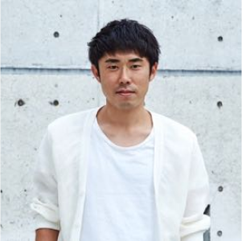

Instructors
講師紹介
-
池上 陽子
メディア流ファッションコンサルタント養成講座
スタイリスト松田綾子氏及び石田純子氏、両氏に師事。
3年間のアシスタント経験を経て2003年独立。
女優や女性モデルを中心に、スタイリングのアシスタントとして、3年間の下積み経験後、フリーランスとして独立。雑誌や広告、テレビなどでファッション スタイリストとして約10年間活動。
同業から相談を受けスタイリスト向け集客サポートを開始。独自のスタイリング力＋提案力＋顧客引き寄せ方法をまとめた「メディア流ファッションコンサルタント養成講座」を主宰。2021年一般社団法人メディアファッションスタイル協会を設立する。 -
藤江 奈緒美
メディア流ブランディングプランナー養成講座
ヘアメイク NEWME 代表
資生堂SABFA卒業。
美容師として5年間サロン勤務後、ヘアメイク事務所で3年経験を積み、その後、フリーのヘアメイクとして独立。
広告、雑誌、ショーなどで著名人やタレントのヘアメイクや、大手企業の仕事も数多く経験。
その人のキャラクターを生かすナチュラルメイクを得意とする。
近年では、自身の知識と経験を一般の方にもお伝えしたいとの想いで、メイク講師、パーソナルカラリスト、専門学校での講師として、プロ養成などにも力を入れている。https://peraichi.com/landing_pages/view/jrr24/
-

中村 剛
メディア流ブランディングプランナー養成講座
スタイリスト (株)ハレテル代表
文化服装学院卒業。
スタイリスト野村昌司氏に師事。
3年間のアシスタント経験を経て2003年独立。
MENS雑誌からキャリアをスタートさせその後、俳優, アーティスト、ブランドカタログ、広告など仕事は多岐に渡る。カジュアルながら品のあるスタイルを提案。
ライブ衣装制作やレストランのユニフォームディレクション、企業へのファッションコンサルタントなども担当。本プロジェクトよりスタイリスト講師としての活動もスタート。 ライブのステージ衣装製作、レストランのコスチュームのディレクションや企業のファッションコンサルタントなども手掛ける。 -

松崎 彩
メディア流ブランディングプランナー養成講座
ビジネス印象力コンサルタント office GOOD impression代表
メーカー勤務を経て、ANAへ入社。客室乗務員として皇室、政治家などVIP対応に従事し、10万人以上のお客様と関わる。
「第一印象を見抜く力・第一印象をよくする力」の中から最も効果的に印象を上げるメソッドを確立。このメソッドを多くのビジネスパーソンに活用してもらいたいとの想いから「office GOOD impression」 を設立。
企業研修、経営者、起業家へのマンツーマンコンサルティングを10年以上行う。特に現在では、第一印象で信頼される外見と動作を身につける「戦略的外見術」を起業家に伝えている。http://good-impression.net